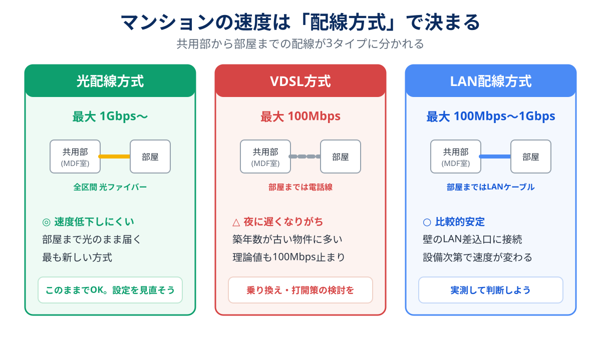

「夜になると動画が止まる」「Web会議で自分だけカクカクする」——マンション住まいのネットの悩みには、実はかなりはっきりした“犯人の傾向”があります。
この記事では、5分でできる原因の切り分けから、費用0円の改善策、根本解決の乗り換えまで、効果の大きい順に解説します。手当たり次第にルーターを買い替える前に、まず犯人を特定しましょう。
マンションのネットが遅い原因は、ほとんどが次の3つです。①建物の配線方式がVDSL(古い電話線) ②ルーターが古い・IPv6非対応 ③「無料インターネット」の混雑。
①なら乗り換えや別回線の追加、②ならルーター側の対策(数千円〜)、③なら自前回線の契約が解決策になります。切り分け方から順に説明します。
マンションプランの料金とエリアを見る(GMOとくとくBB光)公式サイトへ →PR・相談や申し込みの前に、料金と条件は公式サイトでご確認ください
まず5分:原因の切り分け3ステップ
-
速度を測る(昼と夜の2回)
速度測定サイト(Speedtest、Fast.comなど)で、昼と21〜23時の速度を測って記録します。夜だけ極端に落ちるなら「混雑」——配線方式か無料ネットが濃厚です。
-
有線とWi-Fiで比べる
PCをLANケーブルで直結して再測定。有線は速いのにWi-Fiだけ遅いなら、犯人はルーター(か置き場所)。回線の乗り換えでは解決しません。
-
配線方式を確認する
有線でも遅い・夜に落ちるなら、建物の配線方式を確認します(調べ方は後述)。VDSLならそれが根本原因の可能性大です。
速度を決める「配線方式」を理解する
マンションの回線は「建物の共用部まで」は光ファイバーで来ています。問題は共用部から各部屋までの区間。ここが3方式に分かれ、速度の上限を決めています。

VDSL方式は電話線を使うため、どんな回線を契約しても理論値100Mbpsが上限。夜の混雑にも弱く、「遅いマンション」の典型パターンです。築15年以上の物件に多く残っています。
自分の部屋の配線方式の調べ方
- 壁の差込口を見る:「光コンセント」の表記があれば光配線方式。電話のモジュラージャックにVDSL装置(モデム状の機器)が繋がっていればVDSL。壁にLANポートがあればLAN配線方式
- 契約回線のマイページ・書類:プラン名や設備情報に方式が書かれていることが多い
- 管理会社に聞く:「この建物のインターネット設備の配線方式を教えてください」で一発
解決策を効果の大きい順に
対策1【0円〜】IPv6(IPoE)接続に切り替える
契約中の回線がIPv6(IPoE)対応なのに使っていないケースは意外と多いです。マイページから無料で切り替えられることが多く、夜間の混雑による低下がこれだけで改善することがあります。ルーターがIPv6対応かもあわせて確認を。
対策2【数千円〜】ルーターを見直す
有線は速いのにWi-Fiが遅い場合はこちら。目安として、5年以上前のルーターはWi-Fi 5以前の世代のことが多く、買い替え効果が大きいです。Wi-Fi 6対応・IPv6(IPoE)対応のものを選び、床置きや棚の奥ではなく開けた場所に設置しましょう。
対策3【根本解決】建物の別設備・別回線に乗り換える
VDSLが原因の場合の本命です。選択肢は3つ。
- 建物に別の回線設備が入っていないか確認する:フレッツ系がVDSLでも、auひかりなど別系統の設備が光配線で入っている物件があります。各社サイトの物件検索で確認できます(auひかりのマンション対応を確認する方法で判定手順を解説しています)
- 光配線方式への切り替えを管理会社に相談する:NTT側の設備更新で光配線に切り替わる物件も増えています。住民の要望が動くきっかけになることも
- 戸建てタイプ(ファミリープラン)を部屋に直接引く:管理会社の許可が必要ですが、部屋まで光を直接引き込む方法。マンションプランより月額は上がりますが速度は別物です
対策4【工事不可なら】ホームルーターに切り替える
工事の許可が下りない・引越し予定があるなら、コンセントに挿すだけのホームルーターが現実解。5G対応エリアなら、VDSLより速くなるケースも普通にあります。詳しくは工事不要WiFi比較で解説しています。
乗り換えるならどの回線?
マンションでの乗り換え先は「建物対応 × スマホのセット割」で決めます。
| 状況 | 有力な選択肢 | 理由 |
|---|---|---|
| auひかりの設備が建物にある | auひかり | 独自回線で混雑に強い。au/UQセット割 |
| フレッツ設備が光配線方式 | スマホに合わせた光コラボ (ドコモ光/ソフトバンク光/GMOとくとくBB光) |
設備はそのままに事業者変更で切り替えが速い |
| VDSLしかない・工事不可 | ホームルーター | 工事なしで即日。5Gエリアなら速度も期待できる |
7社の料金・実測・セット割を比較し、物件検索の入口もまとめています。
マンションプランの料金とエリアを見る(GMOとくとくBB光)光コラボ・縛りなし・v6プラス対応よくある質問
配線方式はどうやって確認できますか?
VDSLでも速くできますか?
無料インターネット付きなのに遅いのはなぜ?
賃貸でも光回線の工事はできますか?
まとめ:犯人を特定してから、お金を使う
- 切り分けは「昼夜の実測」「有線vs無線」「配線方式」の3ステップ
- Wi-Fiだけ遅い→ルーター対策、有線でも遅い→配線方式(VDSL)を疑う
- VDSLの根本解決は別設備への乗り換えかホームルーター
- 0円でできるIPv6化は今日試せる
乗り換え時の手順とキャッシュバックの注意点は乗り換え完全ガイドにまとめています。
- NTT東日本・西日本 公式サイト(マンションの配線方式・提供形態)
- 各社公式サイトの物件検索・提供エリア情報(2026年8月確認)
- 運営者自身のVDSL物件での実測・改善の経験